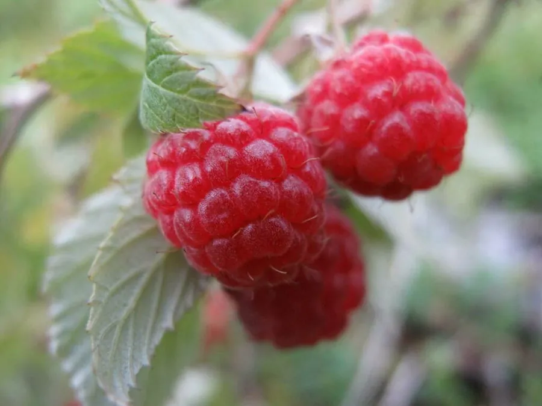

农作物与经济植物 · 植物界
树莓 Rubus idaeus

树莓是蔷薇科悬钩子属灌木，果实由许多小核果聚合而成，酸甜芳香，可鲜食或制果酱，是重要的浆果类经济作物。
- 分类
- 门被子植物门纲双子叶植物纲目蔷薇目科蔷薇科属悬钩子属
- 栖息环境
- 温带林缘、灌丛与山地，喜凉爽和充足光照
- 地理分布
- 原产欧洲、北美与东亚，中国东北、华北有野生分布和栽培
- 保护级别
- 暂无评估（栽培作物）
物种志
树莓是蔷薇科落叶灌木，株高 1–2 m，茎直立或拱曲，密生细刺。叶片羽状复叶，小叶 3–5 枚，边缘有锯齿，叶背灰白色。花白色，花瓣五枚，聚伞花序。果实为聚合果，由许多小核果组成，成熟时红色、黄色或黑色，柔软多汁，中间空心，成熟后容易从花托上脱落，采摘要轻拿轻放。
树莓原产欧洲、北美和东亚的温带地区，野生资源丰富，19 世纪起在欧美开始规模化栽培。它喜凉爽、光照充足，耐寒但不耐高温干旱，适宜在疏松肥沃、排水良好的土壤生长。枝条通常两年生，第一年长枝，第二年结果后枯死。果实采后易腐烂，需冷链运输，多用于鲜食、速冻、果酱和果汁。红树莓是最常见的栽培类型，此外还有黑树莓和黄树莓。
形态与习性
- 株高1–2 m，落叶灌木
- 茎直立或拱曲，有细刺
- 果实聚合果，中间空心
- 结果习性两年生枝结果
- 成熟期夏季
- 用途鲜食、速冻与果酱
趣味知识
- 树莓的果实由许多小核果聚合而成，所以中间是空心的。
- 树莓枝条通常第一年生长、第二年结果。
- 树莓采后极易腐烂，常需速冻保存。